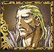

Récits Légendes de Kirin Tor Personnages Célébrités Guildes
Outils Calendrier Calendrier Illustré Mod d'interface
Informations Historiens FAQ Liens Crédits
Les légendes de Kirin Tor
Syncall
Mail : ==> Afficher les personnages de Syncall
Serraghost
 Age : 31
Age : 31
Sexe : Homme
Race : Humain
Faction : Alliance
Formation : Guerrier
Description : La Légion Ardente, Kanelael Mistwinter la connaissait bien. Il lavait combattue sur tous les fronts, et profitait aujourdhui de sa paisible retraite. Il profitait du calme et de la sérénité de ses journées, non loin de Stormwind. Ce repos bienfaiteur contrastait avec ce malstrom de cris et de hurlements qui résonnait dans son crâne. Il revenait épuisé, blessé et affaiblit, mais paradoxalement, il revenait heureux. Heureux d'avoir pu sauver l'enfant qu'il tenait dans son bras valide. Le voir guérissait tous ses tourments et lui rendait un sourire quil avait oublié depuis bien longtemps.
De retour dans ses terres, près du Bois de la Pénombre, il commença l'éducation de ce fils, qu'il nomma Serraghost Angelfury. Ce nom, il lavait emprunté à son meilleur ami mort sous ses yeux, peu avant quil se retire de sa vie de chevalier. Longtemps il hésita à donner à lui donner son propre nom mais dans un soupir, il glissa :
« Un bel enfant comme toi ne doit pas porter le nom d'un guerrier qui n'a pas su protéger son meilleur ami, son frère »
Il navait pas dexpérience dans le domaine, mais il se jura déduquer Serraghost du mieux possible. Il avait ramené suffisamment d'objets de ses voyages : leur vente lui assurerait une fin de vie paisible, à lui et à son fils.
Les premières années, il fit preuve de la plus grande patience qui soit : il l'accompagna dans toutes ses avancées, lui appris tout ce quil pouvait, lui conta ses aventures... Serraghost ne manqua de rien. Il grandit, eu peu d'amis, excepté une certaine Linariel, une humaine timide à lapparence fragile, qui semblait lui plaire. Il passait beaucoup de temps avec elle, mais ne voulut jamais avouer quoi que ce soit à ce propos.
Le jour où Serraghost devint assez fort pour que Kanelael décide de le mettre à l'épreuve arriva. Son fils n'aimait pas particulièrement la violence, mais n'y renonçait pas non plus lorsqu'il fallait relever un défi. Ces traits de caractère, il les connaissait. Il savait trop bien ce que cela représentait. Alors qu'il rentrait d'une chasse au loup, Kanelael décida de lui parler...
[Suite]
Plus d'infos sur Serraghost >>>